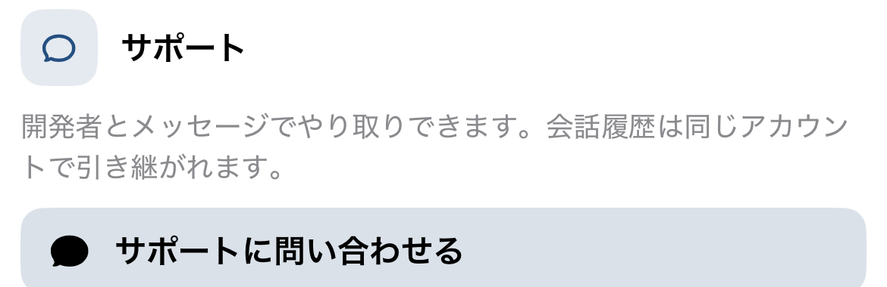
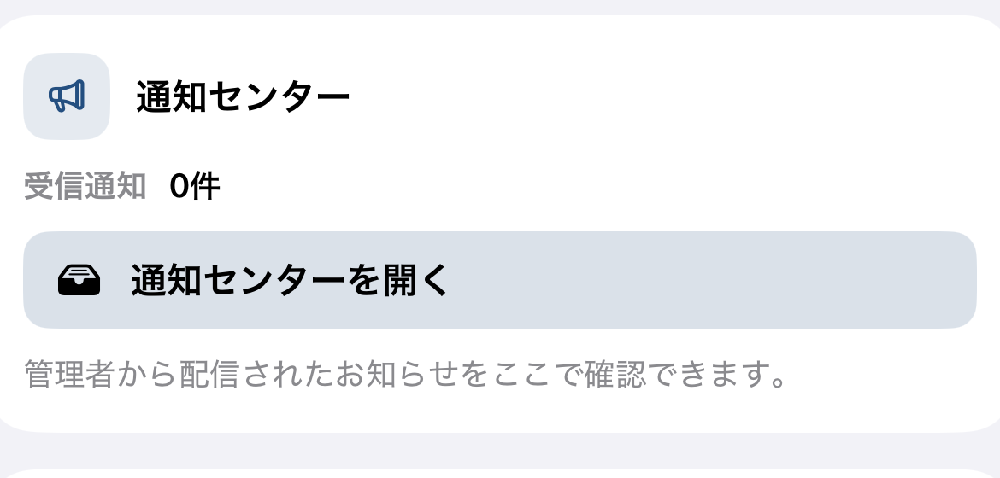
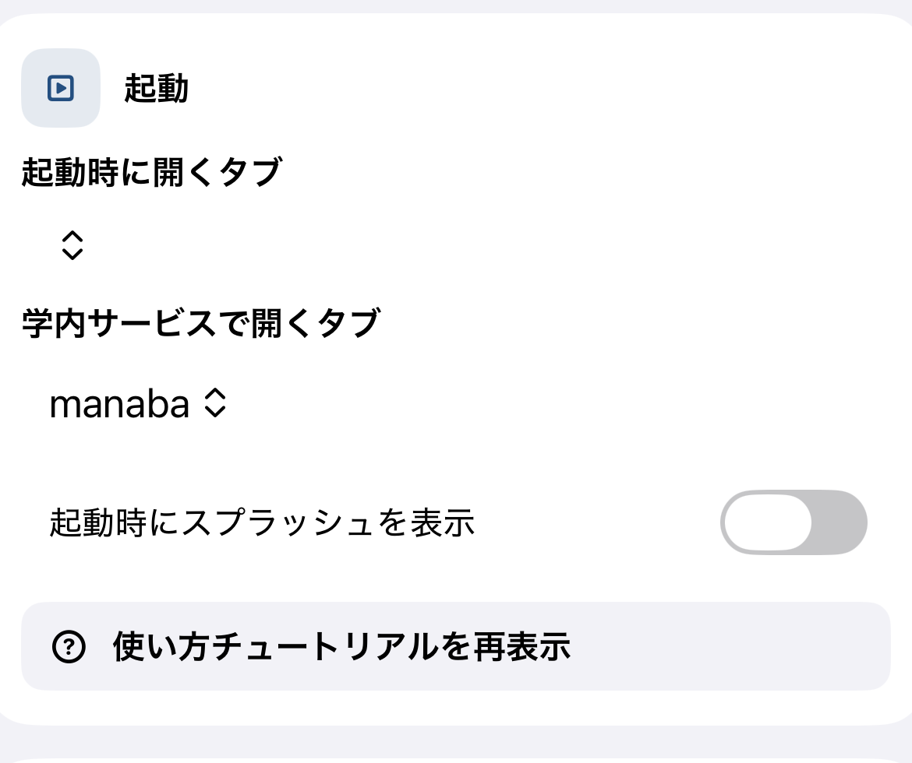
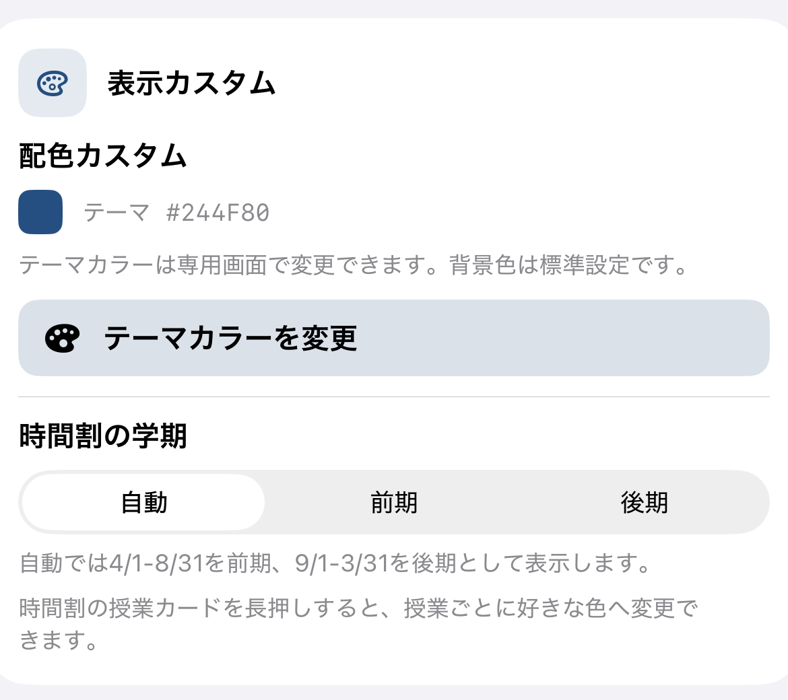
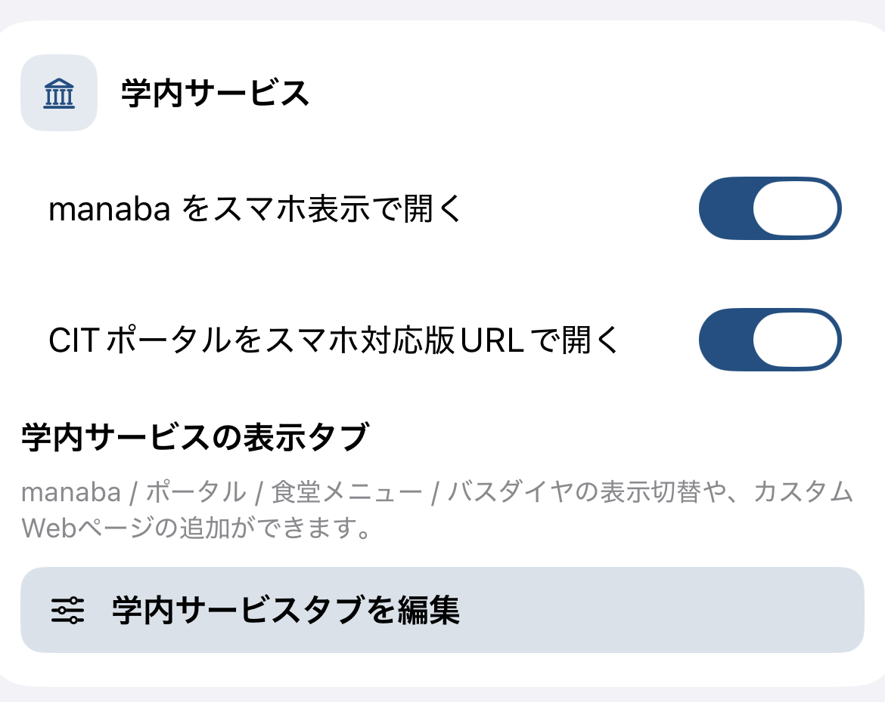
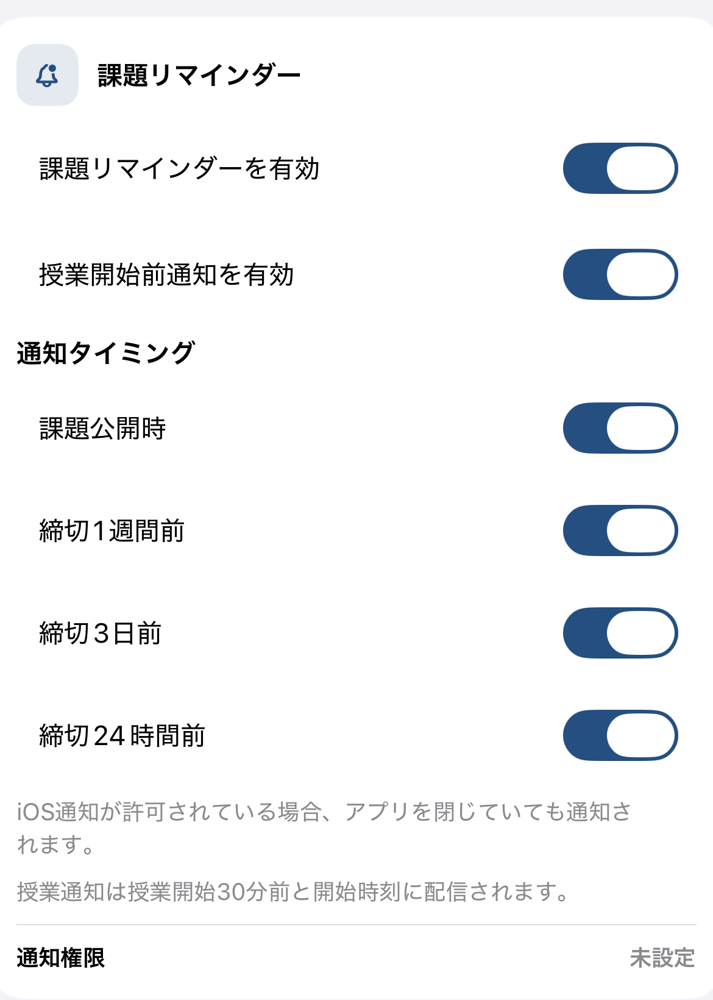

はじめ方
最初にすること
1. ログイン
MARINE User IDとパスワードを入力します。保存した情報を使って、次回以降の学内サービスへのログインを補助します。
2. 時間割を取得
最初に時間割を取得すると、時間割、授業詳細、板書カメラで授業名と教室情報を利用できます。取得に失敗したときは、前回の保存データを表示します。
3. 通知を許可
課題、授業開始前、個人ToDo、サポート返信を通知で受け取る場合は、端末の通知を許可します。後から設定画面でも確認できます。
4. チュートリアル
初回チュートリアルでは、時間割、ToDo、学内サービス、板書カメラ、食堂、バス、通知、設定を案内します。設定の「使い方チュートリアルを再表示」からいつでも見直せます。
時間割
今日の授業を確認する
時間割では日別表示と週表示を切り替え、曜日ごとの授業、教室、担当情報を確認できます。右上の年間予定から学年暦PDFも開けます。
日別・週表示
上部の「日別」「週表示」で見方を切り替えます。曜日は曜日表示のどこを押しても選択できます。更新ボタンでは時間割を再取得します。
学期の表示
通常は日付から前期・後期を自動判定します。設定では前期または後期に固定できます。設定した学期は板書カメラの授業一覧にも反映されます。
授業カードを変更
授業カードを長押しすると、授業名とカード色を変更できます。変更した授業名は、授業詳細と板書カメラでも同じ名称で表示されます。
更新できないとき
通信や学内サービス側の都合で再取得できない場合でも、保存済みの時間割を先に表示します。更新操作の近くに表示される状態を確認して、時間を置いて再試行してください。

授業の詳細
授業ごとの情報をまとめて開く
時間割の授業をタップすると、その授業に関連する情報を確認できます。時間割とmanabaで授業名の表記に差がある場合は、曜日・時限・名称を使って関連づけます。
課題
関連するmanaba課題を確認できます。課題名をタップすると、学内サービス内のmanabaで該当課題ページを開きます。
板書写真
授業詳細から、その授業の板書写真一覧を開けます。写真がない場合も、ここから撮影または端末内の写真を追加できます。
ToDo・課題
課題と自分の予定を、同じ一覧で管理する
manabaから取得した課題と、自分で追加したToDoを同じ一覧に表示します。個人ToDoは色の濃淡で区別し、編集・削除できます。
一覧を絞り込む
「すべて」「ToDoのみ」「課題のみ」で表示対象を切り替えます。manaba課題は取得した並びを保ち、個人ToDoだけが期限・通知日時を使って整理されます。
個人ToDoを追加
右上の追加ボタンから作成します。タイトルは必須です。詳細、期限、通知、URL、写真、ファイルを追加できます。URLと添付ファイルは同じ添付欄で扱います。
期限と通知
期限なしでは期限日時の入力欄を表示しません。通知は「なし」「1回のみ」「毎週」から選択します。1回のみでは通知を期限より後に設定できません。毎週では期限を設定できません。
期限を過ぎた後
1回のみの個人ToDoは期限を過ぎると一覧から自動で整理されます。毎週通知のToDoは、次回の通知日時へ更新して残ります。期限なしでも通知日時があるものは、一覧ではその通知日時を基準に並びます。
添付とURL
詳細画面からURL、PDF、画像などを開けます。添付ファイルはアプリ内プレビューで確認し、対応する共有操作を利用できます。
manaba課題
manaba課題をタップすると、実際の課題ページを開きます。課題の更新や削除を再取得した場合は、古い課題通知を整理します。


学内サービス
よく使うWebサービスを切り替える
学内サービスにはmanaba、CITポータル、食堂メニュー、バスダイヤを表示します。設定で表示・非表示、並び順、カスタムWebページを変更できます。
manaba
スマホ表示と通常表示を設定から選べます。課題一覧や時間割から開いた課題は、manaba内の該当ページへ直接移動します。
CITポータル
保存済みのアカウント情報でログインを補助します。ログイン画面への自動送信は同じ画面で1回に制限します。パスワードが入らない、二要素認証が必要、複数画面エラーなどは状態と手動操作を表示します。
読み込み・再読み込み
読み込み中、ログイン処理中、エラーを区別して表示します。白い画面のまま待たせず、状態と再読み込み操作を示します。学内サービスのタブと戻る操作は読み込み中も表示されます。
戻る
学内サービスでは通常の履歴に戻れます。ポータルだけは、サイト内に戻るボタンがある画面でアプリ側の戻る操作を無効にし、ほかのWebサービスとは切り離して扱います。
PDF・ファイル
学内サービスでPDFを開くと、通常のブラウザに近い閲覧画面を表示します。右上から共有・ダウンロードできます。
食堂メニュー
前回取得した食堂メニューを最初に表示し、バックグラウンドで更新を確認します。更新が見つかった場合だけ新しい内容に切り替えます。
バスダイヤ
バスダイヤは標準で表示します。利用キャンパスを設定すると該当する時刻表を優先し、現在時刻に近い便を確認できます。曜日や経路も切り替えられます。
カスタムWebページ
よく使うWebページを追加し、表示名・URL・並び順・表示状態を管理できます。
板書カメラ
授業ごとに、写真を整理する
時間割の授業名をもとに、板書写真を授業単位で保存します。写真が多い授業でも、授業一覧から目的の写真へ進めます。
写真を追加
授業を開き、「撮影」または「取り込む」を選びます。撮影時にシャッター音を出さないカメラを表示し、端末の向きに合わせて保存します。
写真を確認
写真一覧で選んだ写真を開きます。ピンチ操作で拡大・縮小でき、横向きの写真は横向きのまま確認できます。
写真を管理
写真の共有、写真アプリへの保存、削除ができます。既存の端末写真も授業へ追加できます。
時間割との関係
時間割で変更した授業名は、板書カメラの授業名にも反映されます。時間割または授業詳細から板書カメラを開くこともできます。


通知
必要な通知だけを受け取る
課題リマインダー
課題公開時、締切1週間前、3日前、24時間前を個別にオン・オフできます。通知には授業名、課題名、期限を表示し、タップすると該当課題を開きます。
授業開始前
授業開始前の通知は課題通知と別に設定します。授業開始30分前と開始時刻に通知します。
個人ToDo
個人ToDoの通知は、追加時に設定した単発または毎週の日時に届きます。課題リマインダーの設定とは独立しています。
通知センター
アプリからのお知らせを一覧で確認できます。新しい端末にログインしても、過去のお知らせを自動で追加しません。
通知が届かない場合
設定の「通知権限」で状態を確認してください。無効な場合は、端末の通知設定を開けます。
設定
使い方を自分に合わせる
設定は、アカウント、サポート、通知センター、起動、表示カスタム、学内サービス、課題リマインダー、ポータル二要素認証、法務情報で構成されています。
アカウント
ログイン中のMARINE User IDを確認し、アカウント情報を削除または再入力できます。アカウント情報を削除しても、ポータル側の二要素認証設定は解除されません。
起動
起動時に開くタブと、学内サービスで最初に開くタブを選べます。スプラッシュ表示のオン・オフ、チュートリアルの再表示もここで行います。
表示カスタム
テーマカラーを選択またはカラーコードで指定できます。時間割は自動・前期・後期を選べます。文字の読みやすさを保つため、配色は自動で補正されます。
学内サービス
manabaとポータルのスマホ表示を切り替え、表示タブの順番や表示状態、カスタムWebページを編集できます。
課題リマインダー
課題と授業開始前通知を個別にオン・オフし、課題通知のタイミングを選べます。通知権限の状態もここで確認します。
通知センター
管理者から配信されたお知らせの件数と未読数を確認できます。タップして全文を読み、URLが含まれる場合は外部ブラウザで開けます。
法務情報
利用規約とプライバシーポリシーをアプリ内で確認できます。






ポータル二要素認証
ワンタイムコードを設定する
設定の「ポータル二要素認証」から追加します。ポータル側の登録では、デバイス名を cithub（小文字・スペースなし）にしてください。
自動登録
「ワンタップで自動登録」を選ぶと、ポータルの登録手順を案内します。処理中に繰り返し送信せず、状態を表示します。
QRコードで登録
「QRコードで登録」では、最初に設定手順を確認してからQRコードを読み取ります。手動登録にも対応します。
コードが通らない場合
端末の「日付と時刻」を自動設定にしてください。OTPが失敗した場合、アプリは何度も自動送信しません。画面に表示される状態を確認して手動で操作できます。
削除する前に
アプリからAuthenticator設定を削除しても、ポータル側の二要素認証は解除されません。先にポータル側でcithubの設定を解除してください。解除せずに削除すると、ログインできなくなるおそれがあります。
サポート
開発者へ直接問い合わせる
設定の「サポートに問い合わせる」から、開発者とのメッセージ画面を開きます。問い合わせはログイン中のアカウントに紐付きます。
会話を続ける
同じアカウントでログインすれば、iPhone、iPad、Mac、Android間で会話を引き継げます。画面を開いたままでも、新しい返信を一定間隔で確認します。
返信の通知
開発者から返信が届くと通知します。通知をタップすると、該当するサポート会話を直接開きます。
URLを受け取った場合
サポートや通知センター内のURLは、タップすると端末の外部ブラウザで開きます。
引き継ぎ
端末を変えても、設定を続ける
同期する設定
テーマカラー、時間割の授業名・色、学内サービスの表示と並び、起動先、通知設定、サポート会話などをアカウントに紐付けて反映します。
二要素認証
ポータルのAuthenticator設定は端末側で暗号化して同期します。別端末には、時刻が新しい登録情報を反映します。
端末内に残るもの
板書写真、添付ファイル、ログイン情報などは主に端末内で扱います。写真やファイルの内容を利用状況の分析目的で収集することはありません。
対応端末
端末に合わせた表示
| 機能 | iPhone / iPad | Android | Mac |
|---|---|---|---|
| 時間割・授業詳細・ToDo | 対応 | 対応 | 対応 |
| 学内サービス・PDF・バス | 対応 | 対応 | 対応 |
| 通知・通知センター・サポート | 対応 | 対応 | 対応 |
| 板書写真の閲覧・整理 | 対応 | 対応 | 対応 |
| 板書カメラでの撮影 | 対応 | 対応 | 非表示 |
データの扱い
必要な情報だけを扱う
ログイン情報、時間割、課題、ToDo、板書写真、添付ファイルは、原則として端末内または利用者が接続する公式サービスとの通信で扱います。通知、設定同期、サポートのために、アカウントID、端末・アプリ情報、通知用トークン、利用設定・利用状況を送信する場合があります。
二要素認証の秘密鍵は平文で送信しません。 詳細はプライバシーポリシーを確認してください。